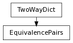

A mapping object similar to a TwoWayDict, with the addition that indexing and ‘__contains__’ can now be used with keys OR values:
>>> eq = EquivalencePairs( {3:'foobar'} )
>>> eq[3]
'foobar'
>>> eq['foobar']
3
>>> 3 in eq
True
>>> 'foobar' in eq
True
This is intended to be used where there is a clear distinction between keys and values, so there is little likelihood of the sets of keys and values intersecting.
The dictionary has the same restrictions as a TwoWayDict, with the added restriction that an object must NOT appear in both the keys and values, unless it maps to itself. If a new item is set that would break this restriction, the old keys/values will be removed from the mapping to ensure these restrictions are met.
>>> eq = EquivalencePairs( {1:'a', 2:'b', 3:'die'} )
>>> eq['a']
1
>>> eq['b']
2
>>> eq[1]
'a'
>>> eq[2]
'b'
>>> del eq['die']
>>> eq[3]
Traceback (most recent call last):
...
KeyError: 3
>>> eq[2] = 1
>>> eq[1]
2
>>> eq[2]
1
>>> eq['a']
Traceback (most recent call last):
...
KeyError: 'a'
>>> eq['b']
Traceback (most recent call last):
...
KeyError: 'b'
# Even though 2 is set as a VALUE, since it already # exists as a KEY, the 2:’b’ mapping is removed, # so eq[‘b’] will be invalid... >>> eq = EquivalencePairs( {1:’a’, 2:’b’} ) >>> eq[‘new’] = 2 >>> eq[‘new’] 2 >>> eq[2] ‘new’ >>> eq[‘b’] Traceback (most recent call last):
...
KeyError: ‘b’
# Similarly, if you set as a KEy something that # already exists as a value... >>> eq = EquivalencePairs( {1:’a’, 2:’b’} ) >>> eq[‘b’] = 3 >>> eq[‘b’] 3 >>> eq[3] ‘b’ >>> eq[2] Traceback (most recent call last):
...
KeyError: 2
If a group of values is fed to the EquivalencePairs (either on initialization, or through ‘update’, etc) that is not consistent with it’s restrictions, then the resulting dictionary is indeterminate; however, it is guaranteed to be a valid/ uncorrupted TwoWayDict.
(This is somewhat similar to the behavior of the dict object itself, which will allow a definition such as {1:2, 1:4} )
Obviously, such shenannigans should be avoided - at some point in the future, this may even cause an error to be raised...
Finally, note that a distinction between keys and values IS maintained, for compatibility with keys(), iter_values(), etc.